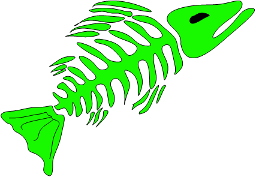

Hintergrund

Angeln ist mehr als nur Fische fangen und jeder
von uns verbindet es mit etwas anderem.
Für uns bedeutet Angeln Zeit mit guten Freunden in der Natur zu
verbringen, die Wildnis zu erleben und einem Biss entgegen zu
fiebern. Kein Angelausflug gleicht dem anderen und jede Session
ist auf ihre eigene Weise etwas Besonderes. Umso wichtiger ist
es sich durch Fotos bzw. Videos bleibende Erinnerungen an eine
sorgenfreie Zeit zu schaffen. Mit genau diesem Gedanken begannen
wir vor etwas mehr als sechs Jahren damit unsere kleineren
Angelausflüge und unsere Fänge zu fotografieren. Um unsere
vergangenen Abenteuer noch einmal erleben zu können und Erfahrungen
festzuhalten, begannen wir erste Filaufnahmen unserer Sessions zu
erstellen. Da wir selbst mit Begeisterung die Abenteuer und Tricks
anderer Angler auf Youtube verfolgten und dabei viel lernten, kam
uns der Gedanke das weitere Angelanfänger von unseren Erfahrungen
profitieren könnten.
Egal ob am Wasser mit Freunden oder in der Schule durch die
neongrünen Schrift stichst du auf jeden Fall heraus, so ein
cooles Design fällt auf und passt überall hin. Von T-Shirts
über Hoodies bis hin zur Snapback haben wir für jeden was am
Start.
J&M Angeln besteht im Grunde aus Jonas und Nico die du als
Gesichter des Kanals kennst. Im Hintergrund stehen noch einige
weitere Personen ohne deren Hilfe wir nicht dort wären wo wir
heute sind.
Erlebnisse, Erfahrungen und Eindrücke unserer Abenteuer am
Wasser teilen wir mit euch auf verschiedenen Social Media
Plattformen. Auf unserem YouTube-Kanal veröffentlichen wir
regelmäßig neue Angelvideos mit Tipps, Tricks und tollen
Naturaufnahmen.
Jeder von uns hat im Laufe seiner Anglerlaufbahn diverses
Tackle getestet. Finde heraus, welches Material uns überzeugen
konnte und auf welches Equipment wir bei unseren Karpfen-,
Spinnfisch- oder Ansitz-Sessions zurückgreifen.
Gerade bei jungen Anglern ist oftmals der Preis kaufentscheidend
für ein Produkt. Um dich vor dem bekannten „Billig kauft doppelt“
zu schützen möchten wir dir über unsere Testberichte einen Eindruck
vermitteln welche Produkte uns überzeugen konnten und warum.
Um die Ruhe der Natur und die Zeit mit seinen Freunden am Wasser
noch intensiver genießen zu können verzichten wir manchmal auf
die aufwendige Produktion eines Videos. Damit du unsere Abenteuer
miterleben kannst schreiben wir zu einigen unserer Sessions Berichte.